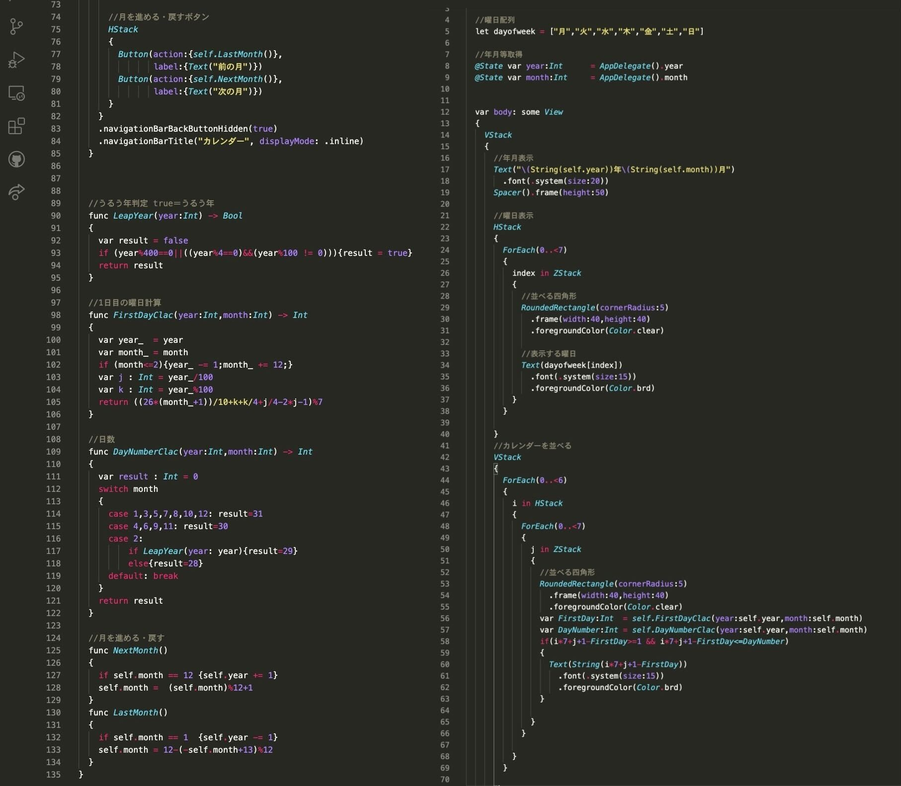
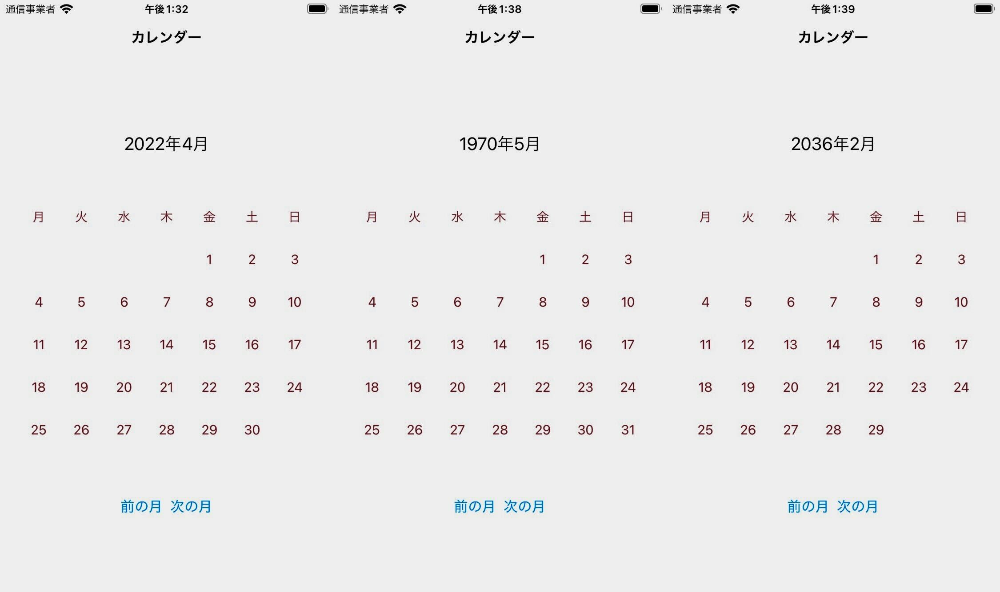

78回生 てぃー
こんにちは。78回生のてぃーです。昔はすしとるなという名前を使用していました。実はこの部の副部長をしています。ですが何も仕事をしていません。ごめんなさい。
そういえば競プロをやめました。中2の夏くらいまでは競プロに全てを捧げるぞとか思っていたんですが、凄い人たちを見たり他に自分の好きなこと見つけたりして、そろそろ競プロは良いかなってなりました。
ということで今回はSwiftで万年カレンダーのiOSアプリを実装することにしました。カレンダーは様々なアプリで使えるので、自分でカレンダーを作れるようになっておくとカスタマイズも自在にできるので便利だなと思い実装しました。
万年カレンダーを実装する上で最も重要となるのが、曜日の計算です。この曜日の計算をするための公式がツェラーの公式というものです。まずはこの公式を導出します。
とりあえず西暦\( y \)年\( m \)月\( d \)日の曜日を求めることにします。まず前提として、西暦1年1月1日は月曜日です。(紙版では土曜日としていましたが間違いです。すみません。)ここから何日経過したかを求めることで、曜日を計算することができます。閏年がなければ365に年数をかけるだけで良いのですが、閏年は、
「4の倍数かつ100の倍数でない。または400の倍数である年のみ閏年になる」
というややこしい感じになっているので日数を求めるのが割と大変です。
まず、西暦\( y \)年1月1日の西暦1年1月1日からの経過日数を求めます。とりあえず100の倍数が鍵となるので、西暦\( y \)年を\( 100j+k \)年に分解します。閏年分以外を計算すると、\( 365(100j+k-1) \)日となります。ここから、基本的に100年に24回閏年があるので\( +24j \)日、ただし400年に25回ある世紀があるので\( +\lfloor j/4 \rfloor \)日、下2桁分の\( +\lfloor k/4 \rfloor \)をすると、西暦\( y \)年1月1日の西暦1年1月1日からの経過日数は、
\( 365(100j+k-1) + \lfloor j/4 \rfloor + \lfloor k/4 \rfloor \)日
となります。しかし365などは7で余りを取った方が小さくなるので、頑張って変形して、
\( k-1-2j+ \lfloor j/4 \rfloor +\lfloor k/4 \rfloor \)日
と書き換えることができます。
それでは次に\( m \)月\( d \)日までの日数を求めることにしましょう。。とりあえず2月は閏年が入って邪魔なので、1月2月を前年の13月14月として考えると嬉しい気持ちになります。年の計算に閏年は含まれてるので、これで閏年のことは考えなくて良くなります、3月から1月1日の日数を順に計算すると、59,90,120,148,181,212,243,263,304,334,365,396となります。これらを7で余りをとると3,6,1,4,6,3,5,0,3,5,1,4となります。これは、\( \lfloor 26(m+1)/10 \rfloor \)の法を7とした余りと一致する(たまたま？わかりません)ので、ここに\( +d \)日して、
\( k-2j+d-1+ \lfloor j/4 \rfloor +\lfloor k/4 \rfloor + \lfloor 26(m+1)/10 \rfloor \)日
を7で割った余りが0の時に月曜日、1の時に火曜日…となることがわかります。詳しくはウィキペディアでも見てくださると嬉しいです。
実際にSwiftでこれを実装します。カレンダーの場合は、毎月最初の日の曜日を求めて、それを順番に並べていくという実装方法が良いと思います。アプリに関していうと、SwiftUIというプラットフォームでは、四角いマス目を表のように配置できるので、今回はそれを使用してカレンダーを作りました。コードは次のような感じです。

図8.1:
最後に、実際にこれを実装したアプリの概観だけ掲載します。

図8.2: